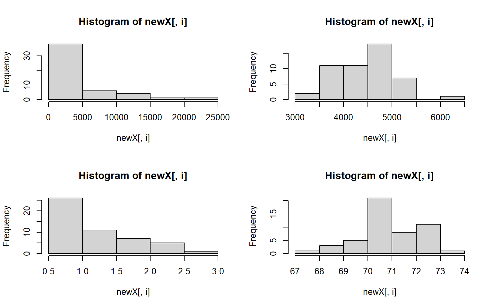

8 Week 7 For loops and the apply family of functions
A few useful commands: function(), is.na, which, var, length, for(){ }, points, print, paste, plot, unique, sample
for loops: In many languages, the best way to repeat a calculation is to use a for-loop: For example, we could square each number 1 to 10
squares = rep(NA, 10) # use rep to create a vector length 10 of NAs to store the result
for (i in 1:10) { # for loop
squares[i] = i^2
}
squares
#> [1] 1 4 9 16 25 36 49 64 81 100An alternative to for-loops in R is using the ‘apply’ family, while for-loops apply a function to one item at a time and then go on to the next one, “apply” applies functions to every item at once ## apply family ### sapply There are several apply functions that vary in the output the return and vary somewhat in the input they require. We’ll go over sapply “simplifying” apply which returns a vector, first.
#?sapply
# syntax: sapply(X = object_to_repeat_over, FUN = function_to_repeat)
# simple example of sapply over a vector
# we can use an in-line function definition
sapply(1:10, function(x) x^2)
#> [1] 1 4 9 16 25 36 49 64 81 100
# equivalently, we can define our own functions separately for sapply
# e.g. a function that calculates the area of a circle radius r, pi*r^2
areaCircle = function(r){
return(pi * r^2)
}
sapply(1:10, areaCircle)
#> [1] 3.141593 12.566371 28.274334 50.265482 78.539816 113.097336 153.938040 201.061930 254.469005
#> [10] 314.159265
# in R, we can also just use short-hand for simple vector calculations:
pi*(1:10)^2
#> [1] 3.141593 12.566371 28.274334 50.265482 78.539816 113.097336 153.938040 201.061930 254.469005
#> [10] 314.159265
# but unlike the short-hand, sapply can also iterate over elements in a list
listy = list(a = TRUE, b = c("a", "b", "c"), c = 10:100)
str(listy) # look at the structure of 'listy'
#> List of 3
#> $ a: logi TRUE
#> $ b: chr [1:3] "a" "b" "c"
#> $ c: int [1:91] 10 11 12 13 14 15 16 17 18 19 ...
length(listy) # look at the length of 'listy'
#> [1] 3
# use sapply to return a vector for length of each object within the list
sapply(listy, FUN = length)
#> a b c
#> 1 3 91You can also use sapply to create plots! For example, use sapply to plot these 4 dataframes at once:
df1 = data.frame(x1 = 1:10, y1 = 1:10)
df2 = data.frame(x2 = 1:10, y2 = -1:-10)
df3 = data.frame(x3 = 1:10, y3 = 10:1)
df4 = data.frame(x4 = 1:10, y4 = 1:10)
my_list = list(df1, df2, df3, df4) # put 4 data frames together in a list
par(mfrow = c(2,2)) # set up frame for 4 plots
sapply(my_list, plot) # plot my_list with sapply#> [[1]]
#> NULL
#>
#> [[2]]
#> NULL
#>
#> [[3]]
#> NULL
#>
#> [[4]]
#> NULL8.0.1 apply
The apply function is highly useful for applying a function to rows or columns of a dataframe or matrix.
Example syntax for the dataframe or matrix X:
apply(X = over this object, MARGIN 1 for rows or 2 for columns,FUN = apply this function)
You can also use apply on a dataframe we worked with earlier the states data to plot each column against Population
#load in the data
data(state)
states = as.data.frame(state.x77) # convert data to a familiar format - data frame
str(states) # let's take a look at the dataframe
#> 'data.frame': 50 obs. of 8 variables:
#> $ Population: num 3615 365 2212 2110 21198 ...
#> $ Income : num 3624 6315 4530 3378 5114 ...
#> $ Illiteracy: num 2.1 1.5 1.8 1.9 1.1 0.7 1.1 0.9 1.3 2 ...
#> $ Life Exp : num 69 69.3 70.5 70.7 71.7 ...
#> $ Murder : num 15.1 11.3 7.8 10.1 10.3 6.8 3.1 6.2 10.7 13.9 ...
#> $ HS Grad : num 41.3 66.7 58.1 39.9 62.6 63.9 56 54.6 52.6 40.6 ...
#> $ Frost : num 20 152 15 65 20 166 139 103 11 60 ...
#> $ Area : num 50708 566432 113417 51945 156361 ...
# calculate the mean for each column
apply(states, 2, mean)
#> Population Income Illiteracy Life Exp Murder HS Grad Frost Area
#> 4246.4200 4435.8000 1.1700 70.8786 7.3780 53.1080 104.4600 70735.8800
# note you could get this with colMeans() or summary(), along with the min and max and other values, but there may be instances where you only want the mean
# you could also plot each column against Population in ggplotapply(states, 2, FUN = function(i) ggplot(states, aes(x=Population, y = i))+geom_point()+geom_smooth(method="lm")+theme_classic())
#> $Population
#> `geom_smooth()` using formula 'y ~ x'#>
#> $Income
#> `geom_smooth()` using formula 'y ~ x'#>
#> $Illiteracy
#> `geom_smooth()` using formula 'y ~ x'#>
#> $`Life Exp`
#> `geom_smooth()` using formula 'y ~ x'#>
#> $Murder
#> `geom_smooth()` using formula 'y ~ x'#>
#> $`HS Grad`
#> `geom_smooth()` using formula 'y ~ x'#>
#> $Frost
#> `geom_smooth()` using formula 'y ~ x'#>
#> $Area
#> `geom_smooth()` using formula 'y ~ x'We can do the same things across all rows. But if you want to plot all the rows as we did the columns above, I suggest you do that with a smaller dataset than the states dataframe.
#calculate the sum across each row in states
apply(states, 1, sum)
#> Alabama Alaska Arizona Arkansas California Colorado
#> 58094.55 573412.81 120312.25 57620.56 182838.71 111500.46
#> Connecticut Delaware Florida Georgia Hawaii Idaho
#> 13581.68 7604.76 67328.26 67280.04 12399.60 87872.27
#> Illinois Indiana Iowa Kansas Kentucky Louisiana
#> 72312.94 46121.58 63704.36 88987.58 46964.80 52419.96
#> Maine Maryland Massachusetts Michigan Minnesota Mississippi
#> 35961.49 19544.92 18632.73 70939.43 88178.46 52908.99
#> Missouri Montana Nebraska Nevada New Hampshire New Jersey
#> 78253.59 150970.36 82809.40 115962.23 14426.83 20335.73
#> New Mexico New York North Carolina North Dakota Ohio Oklahoma
#> 126414.42 71027.55 58314.61 75308.28 56527.22 75692.52
#> Oregon Pennsylvania Rhode Island South Carolina South Dakota Tennessee
#> 103308.93 61528.73 6787.00 36860.66 81102.58 49516.61
#> Texas Utah Vermont Virginia Washington West Virginia
#> 278726.70 87603.30 13948.84 49675.78 75165.12 29705.18
#> Wisconsin Wyoming
#> 63800.68 102458.698.0.2 lapply – “list” apply
We’ll just show a quick example of lapply. It works in the same way as sapply, but returns a list instead of a vector.
lapply(1:10, function(x) x^2) # lapply returns list
#> [[1]]
#> [1] 1
#>
#> [[2]]
#> [1] 4
#>
#> [[3]]
#> [1] 9
#>
#> [[4]]
#> [1] 16
#>
#> [[5]]
#> [1] 25
#>
#> [[6]]
#> [1] 36
#>
#> [[7]]
#> [1] 49
#>
#> [[8]]
#> [1] 64
#>
#> [[9]]
#> [1] 81
#>
#> [[10]]
#> [1] 100
sapply(1:10, function(x) x^2, simplify = FALSE) # same as an lapply
#> [[1]]
#> [1] 1
#>
#> [[2]]
#> [1] 4
#>
#> [[3]]
#> [1] 9
#>
#> [[4]]
#> [1] 16
#>
#> [[5]]
#> [1] 25
#>
#> [[6]]
#> [1] 36
#>
#> [[7]]
#> [1] 49
#>
#> [[8]]
#> [1] 64
#>
#> [[9]]
#> [1] 81
#>
#> [[10]]
#> [1] 100
sapply(1:10, function(x) x^2) # default is simplify = TRUE which retuns a vector
#> [1] 1 4 9 16 25 36 49 64 81 1008.0.3 tapply - “per Type” apply
The tapply function is one of my favorites because it is a really great way to sumarize data that has multiple categorical variables that can be
# load state data again, you can skip this if you already have it loaded
data(state)
states = as.data.frame(state.x77) # convert data to a familiar format - data frame
str(states) # let's take a look at the dataframe
#> 'data.frame': 50 obs. of 8 variables:
#> $ Population: num 3615 365 2212 2110 21198 ...
#> $ Income : num 3624 6315 4530 3378 5114 ...
#> $ Illiteracy: num 2.1 1.5 1.8 1.9 1.1 0.7 1.1 0.9 1.3 2 ...
#> $ Life Exp : num 69 69.3 70.5 70.7 71.7 ...
#> $ Murder : num 15.1 11.3 7.8 10.1 10.3 6.8 3.1 6.2 10.7 13.9 ...
#> $ HS Grad : num 41.3 66.7 58.1 39.9 62.6 63.9 56 54.6 52.6 40.6 ...
#> $ Frost : num 20 152 15 65 20 166 139 103 11 60 ...
#> $ Area : num 50708 566432 113417 51945 156361 ...
# example syntax --- tapply(variable of interest, grouping variable, function)
# for each US region in our dataset, finds the mean of Frost for states in that region
tapply(states$Frost, state.region, mean) # state.region contains the region information for each state
#> Northeast South North Central West
#> 132.7778 64.6250 138.8333 102.1538
# you can nest apply statements! Let's find the region average for all the variables in the states dataset
apply(states,
2, # apply over columns of my_states
function(x) tapply(x, state.region, mean)) # each column = variable of interest for tapply
#> Population Income Illiteracy Life Exp Murder HS Grad Frost Area
#> Northeast 5495.111 4570.222 1.000000 71.26444 4.722222 53.96667 132.7778 18141.00
#> South 4208.125 4011.938 1.737500 69.70625 10.581250 44.34375 64.6250 54605.12
#> North Central 4803.000 4611.083 0.700000 71.76667 5.275000 54.51667 138.8333 62652.00
#> West 2915.308 4702.615 1.023077 71.23462 7.215385 62.00000 102.1538 134463.008.1 Exercise 2.3 apply and tapply
Exercise 2.3
A few useful commands: function(){ }, apply(), tapply(), hist(), dim(), prod(), sd() 1. what is the average population, income, and area of all 50 states ins the
statesdataset
Solution
# load state data
#?state
data(state)
# this data is stored in a slightly different way than other datasets we've used so far
states = as.data.frame(state.x77) # run this line of code to avoid later confusion
apply(states,2,mean)
#> Population Income Illiteracy Life Exp Murder HS Grad Frost Area
#> 4246.4200 4435.8000 1.1700 70.8786 7.3780 53.1080 104.4600 70735.8800
#or an alternative that will get you only the columns requested
colMeans(states[,c("Population", "Income", "Area")])
#> Population Income Area
#> 4246.42 4435.80 70735.88
- what is the average area of the states from different regions of the country? Hint: use the object state.region in your environment
Solution
tapply(states$Area, state.region, mean)
#> Northeast South North Central West
#> 18141.00 54605.12 62652.00 134463.00
- Plot a histogram for each column in the states data (Population, Income, Illiteracy etc.)
Solution
#how many columns do we have?
dim(states)
#> [1] 50 8
par(mfrow = c(2,2)) # make your plot window show 2 rows and 2 columns at once
apply(states, 2, hist)
#> $Population
#> $breaks
#> [1] 0 5000 10000 15000 20000 25000
#>
#> $counts
#> [1] 38 6 4 1 1
#>
#> $density
#> [1] 0.000152 0.000024 0.000016 0.000004 0.000004
#>
#> $mids
#> [1] 2500 7500 12500 17500 22500
#>
#> $xname
#> [1] "newX[, i]"
#>
#> $equidist
#> [1] TRUE
#>
#> attr(,"class")
#> [1] "histogram"
#>
#> $Income
#> $breaks
#> [1] 3000 3500 4000 4500 5000 5500 6000 6500
#>
#> $counts
#> [1] 2 11 11 18 7 0 1
#>
#> $density
#> [1] 0.00008 0.00044 0.00044 0.00072 0.00028 0.00000 0.00004
#>
#> $mids
#> [1] 3250 3750 4250 4750 5250 5750 6250
#>
#> $xname
#> [1] "newX[, i]"
#>
#> $equidist
#> [1] TRUE
#>
#> attr(,"class")
#> [1] "histogram"
#>
#> $Illiteracy
#> $breaks
#> [1] 0.5 1.0 1.5 2.0 2.5 3.0
#>
#> $counts
#> [1] 26 11 7 5 1
#>
#> $density
#> [1] 1.04 0.44 0.28 0.20 0.04
#>
#> $mids
#> [1] 0.75 1.25 1.75 2.25 2.75
#>
#> $xname
#> [1] "newX[, i]"
#>
#> $equidist
#> [1] TRUE
#>
#> attr(,"class")
#> [1] "histogram"
#>
#> $`Life Exp`
#> $breaks
#> [1] 67 68 69 70 71 72 73 74
#>
#> $counts
#> [1] 1 3 5 21 8 11 1
#>
#> $density
#> [1] 0.02 0.06 0.10 0.42 0.16 0.22 0.02
#>
#> $mids
#> [1] 67.5 68.5 69.5 70.5 71.5 72.5 73.5
#>
#> $xname
#> [1] "newX[, i]"
#>
#> $equidist
#> [1] TRUE
#>
#> attr(,"class")
#> [1] "histogram"
#>
#> $Murder
#> $breaks
#> [1] 0 2 4 6 8 10 12 14 16
#>
#> $counts
#> [1] 2 9 8 10 4 12 4 1
#>
#> $density
#> [1] 0.02 0.09 0.08 0.10 0.04 0.12 0.04 0.01
#>
#> $mids
#> [1] 1 3 5 7 9 11 13 15
#>
#> $xname
#> [1] "newX[, i]"
#>
#> $equidist
#> [1] TRUE
#>
#> attr(,"class")
#> [1] "histogram"
#>
#> $`HS Grad`
#> $breaks
#> [1] 35 40 45 50 55 60 65 70
#>
#> $counts
#> [1] 4 6 4 15 13 5 3
#>
#> $density
#> [1] 0.016 0.024 0.016 0.060 0.052 0.020 0.012
#>
#> $mids
#> [1] 37.5 42.5 47.5 52.5 57.5 62.5 67.5
#>
#> $xname
#> [1] "newX[, i]"
#>
#> $equidist
#> [1] TRUE
#>
#> attr(,"class")
#> [1] "histogram"
#>
#> $Frost
#> $breaks
#> [1] 0 20 40 60 80 100 120 140 160 180 200
#>
#> $counts
#> [1] 6 2 3 4 5 7 11 4 6 2
#>
#> $density
#> [1] 0.006 0.002 0.003 0.004 0.005 0.007 0.011 0.004 0.006 0.002
#>
#> $mids
#> [1] 10 30 50 70 90 110 130 150 170 190
#>
#> $xname
#> [1] "newX[, i]"
#>
#> $equidist
#> [1] TRUE
#>
#> attr(,"class")
#> [1] "histogram"
#>
#> $Area
#> $breaks
#> [1] 0e+00 1e+05 2e+05 3e+05 4e+05 5e+05 6e+05
#>
#> $counts
#> [1] 42 6 1 0 0 1
#>
#> $density
#> [1] 8.4e-06 1.2e-06 2.0e-07 0.0e+00 0.0e+00 2.0e-07
#>
#> $mids
#> [1] 50000 150000 250000 350000 450000 550000
#>
#> $xname
#> [1] "newX[, i]"
#>
#> $equidist
#> [1] TRUE
#>
#> attr(,"class")
#> [1] "histogram"
- let’s assume that we don’t want to live in a state with high illiteracy, high murder, and many freezing days; also assume that each of these factors contribute equally to our opinion (Illiteracy * Murder * Frost) = undesirable What 10 states should we avoid? # hint use prod(); and maybe order()
Solution
livability <- apply(states[,c("Illiteracy", "Murder", "Frost")], 1, prod) # subset to variables of interest
livability[order(livability, decreasing = T)][1:10] # top ten least livable states
#> Alaska New Mexico South Carolina Georgia Kentucky North Carolina
#> 2576.40 2560.80 1734.20 1668.00 1611.20 1598.40
#> Mississippi Tennessee New York Michigan
#> 1500.00 1309.00 1251.32 1248.75
- use sapply() to plot a histogram of the data below 4 times, in 4 different colors. For extra style, title the plot by it’s color, e.g. the red plot is titled “red”
data_to_plot = c(1,3,4,5,6,3,3,4,5,1,1,1,1,1)
par(mfrow = c(2,2))# run this line to set your plot to make 4 plots in total (2rows, 2columns)Solution
data_to_plot = c(1,3,4,5,6,3,3,4,5,1,1,1,1,1)
my_colors = c("deeppink", "red", "blue", "darkgreen")
par(mfrow = c(2,2)) # extra styling, plots in a 2x2 grid
sapply(my_colors, FUN = function(i) hist(data_to_plot, main = i, col = i))#> deeppink red blue darkgreen
#> breaks Integer,6 Integer,6 Integer,6 Integer,6
#> counts Integer,5 Integer,5 Integer,5 Integer,5
#> density Numeric,5 Numeric,5 Numeric,5 Numeric,5
#> mids Numeric,5 Numeric,5 Numeric,5 Numeric,5
#> xname "data_to_plot" "data_to_plot" "data_to_plot" "data_to_plot"
#> equidist TRUE TRUE TRUE TRUE
- Standardize all the variables in the states dataset and save your answer to a new dataframe, states_standardized Hint: to standardize a variable, you subtract the mean and divide by the standard deviation (sd)
Solution
states_standardized = apply(states, 2, function(x) (x-mean(x))/sd(x))
# original:
head(states)
#> Population Income Illiteracy Life Exp Murder HS Grad Frost Area
#> Alabama 3615 3624 2.1 69.05 15.1 41.3 20 50708
#> Alaska 365 6315 1.5 69.31 11.3 66.7 152 566432
#> Arizona 2212 4530 1.8 70.55 7.8 58.1 15 113417
#> Arkansas 2110 3378 1.9 70.66 10.1 39.9 65 51945
#> California 21198 5114 1.1 71.71 10.3 62.6 20 156361
#> Colorado 2541 4884 0.7 72.06 6.8 63.9 166 103766
# standardized
head(states_standardized)
#> Population Income Illiteracy Life Exp Murder HS Grad Frost Area
#> Alabama -0.1414316 -1.3211387 1.525758 -1.3621937 2.0918101 -1.4619293 -1.6248292 -0.2347183
#> Alaska -0.8693980 3.0582456 0.541398 -1.1685098 1.0624293 1.6828035 0.9145676 5.8093497
#> Arizona -0.4556891 0.1533029 1.033578 -0.2447866 0.1143154 0.6180514 -1.7210185 0.5002047
#> Arkansas -0.4785360 -1.7214837 1.197638 -0.1628435 0.7373617 -1.6352611 -0.7591257 -0.2202212
#> California 3.7969790 1.1037155 -0.114842 0.6193415 0.7915396 1.1751891 -1.6248292 1.0034903
#> Colorado -0.3819965 0.7294092 -0.771082 0.8800698 -0.1565742 1.3361400 1.1838976 0.3870991
- Create a histogram again for each variable in the states data, but this time label each histogram with the variable names when you plot Hint: instead of using apply to iterate over the columns themselves, you can often iterate over the column names with sapply
Solution
par(mfrow = c(2,2))
sapply(colnames(states), function(x)hist(states[ , x],main = x, xlab = x,col = "darkblue"))#> Population Income Illiteracy Life Exp Murder HS Grad
#> breaks Numeric,6 Integer,8 Numeric,6 Integer,8 Numeric,9 Integer,8
#> counts Integer,5 Integer,7 Integer,5 Integer,7 Integer,8 Integer,7
#> density Numeric,5 Numeric,7 Numeric,5 Numeric,7 Numeric,8 Numeric,7
#> mids Numeric,5 Numeric,7 Numeric,5 Numeric,7 Numeric,8 Numeric,7
#> xname "states[, x]" "states[, x]" "states[, x]" "states[, x]" "states[, x]" "states[, x]"
#> equidist TRUE TRUE TRUE TRUE TRUE TRUE
#> Frost Area
#> breaks Numeric,11 Numeric,7
#> counts Integer,10 Integer,6
#> density Numeric,10 Numeric,6
#> mids Numeric,10 Numeric,6
#> xname "states[, x]" "states[, x]"
#> equidist TRUE TRUEFor the final day covering basics in R we will have a coding session where we tackle a challenge exercise on a dataset.
Please download the exercise here
wget https://raw.githubusercontent.com/BayLab/MarineGenomicsData/main/R_Final_Challenges/chickWeightChallenge_week7_semester.RAnd the solutions are here
wget https://raw.githubusercontent.com/BayLab/MarineGenomicsData/main/R_Final_Challenges/ChickWeight_Challenge_SOLUTIONS.pdf